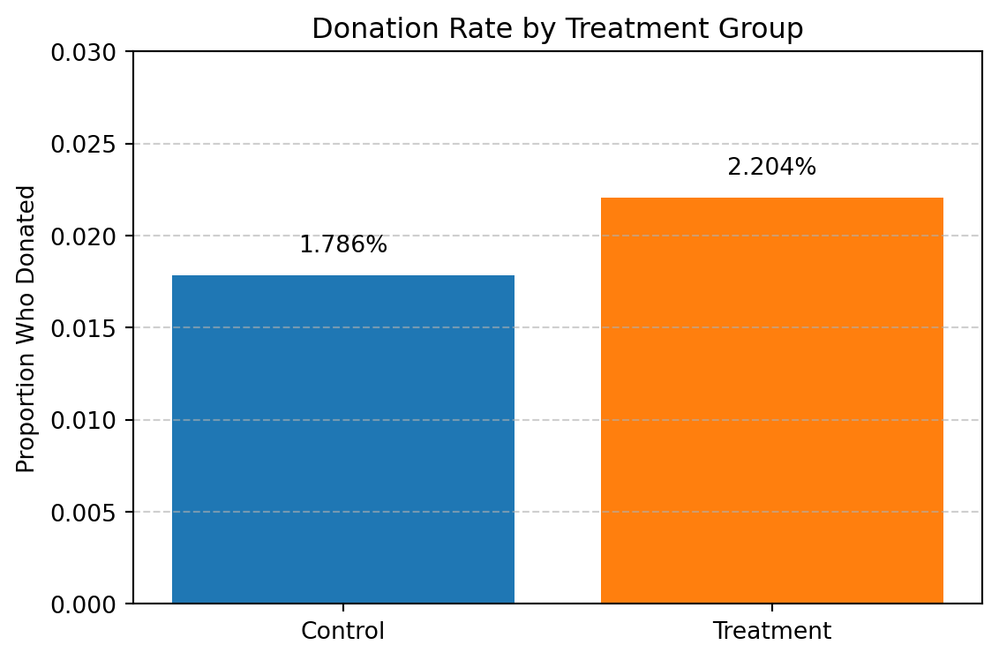
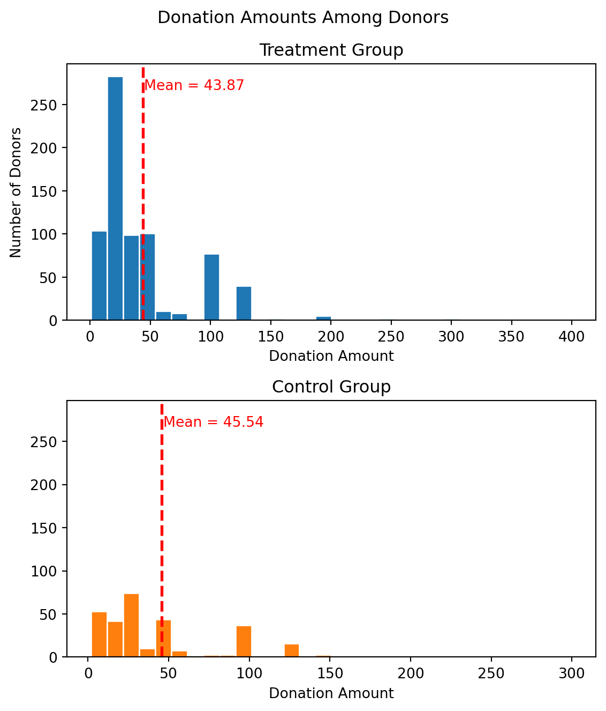
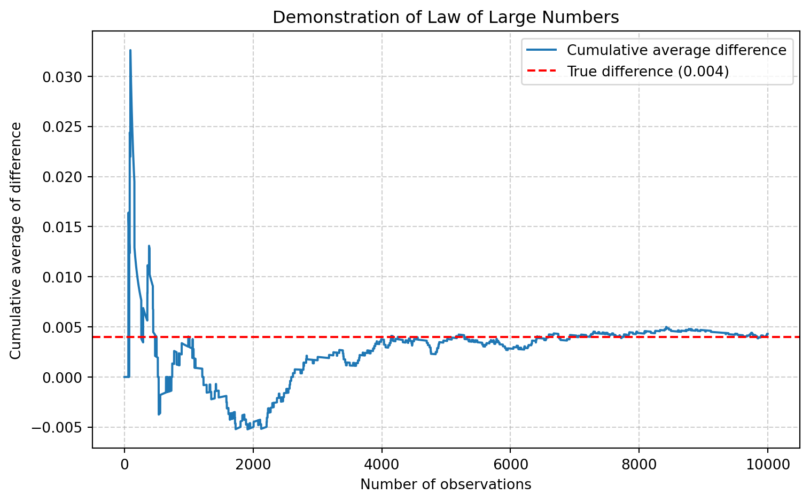
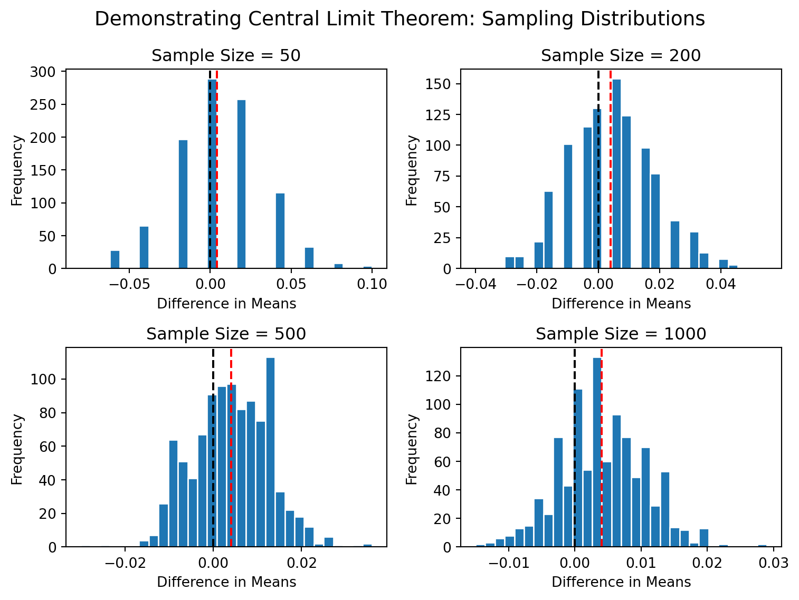

Charitable giving constitutes a significant component of private contributions to public goods, with Americans donating consistently around 2% of GDP annually. Despite the scale and importance of these donations, fundraisers have historically relied on intuition and anecdotal evidence rather than rigorous experimental data to guide their strategies.
Dean Karlan at Yale and John List at the University of Chicago conducted a field experiment to test the effectiveness of different fundraising letters. They sent out 50,000 fundraising letters to potential donors, randomly assigning each letter to one of three treatments: a standard letter, a matching grant letter, or a challenge grant letter. They published the results of this experiment in the American Economic Review in 2007. The article and supporting data are available from the AEA website and from Innovations for Poverty Action as part of Harvard’s Dataverse.
The standard letter asked for a donation in the usual way, without any mention of matching. This formed the control group. In contrast, both the matching grant letter and the challenge grant letter indicated that a fellow donor had agreed to match each contribution at a given rate, conditional on others also donating. While the language varied slightly between “matching” and “challenge” framing, both effectively served as treatment groups and were analyzed together in the main analysis.
The core question explored in this study was whether offering a match — and varying the generosity of that match — would affect donor behavior. The researchers were interested in how matching offers influence the extensive margin (whether people donate at all) and the intensive margin (how much they give).
To explore this, recipients were randomly assigned to fundraising letters that varied along three dimensions:
Match ratio: $1:$1, $2:$1, or $3:$1
Maximum match amount: either $25,000, $50,000, $100,000, or left unspecified
Suggested donation amount: tailored to each donor’s past behavior (equal to their highest previous gift, 1.25× that amount, or 1.5×)
The main outcome variables were whether a recipient donated and, if so, how much they contributed. Karlan and List found that simply including a matching offer — regardless of the exact match ratio — increased both the probability of giving and the revenue raised per letter. However, increasing the match ratio from $1:$1 to $2:$1 or $3:$1 yielded no additional benefit, suggesting diminishing or flat marginal returns from more generous matching. Additionally, the effect was stronger in red states (those that voted for George W. Bush in 2004), pointing to interesting heterogeneity in treatment effects across political environments.
This project seeks to replicate their results. Using the original dataset, we examine how the availability and generosity of matching gifts influence giving behavior. Along the way, we visualize treatment effects and estimate regression models similar to those in the published paper. The goal is not only to test the robustness of their results but also to understand what types of interventions are most effective in motivating donors.
Data
Description
The dataset used in this project comes from the original field experiment conducted by Karlan and List (2007). It contains information on 50,083 prior donors who were randomly assigned to receive one of several versions of a fundraising letter. Each row in the dataset represents a single individual, and the columns record treatment assignments, past donation behavior, observed giving outcomes, and various demographic and geographic characteristics.
import pandas as pddf = pd.read_stata("karlan_list_2007.dta")df.head()
treatment
control
ratio
ratio2
ratio3
size
size25
size50
size100
sizeno
...
redcty
bluecty
pwhite
pblack
page18_39
ave_hh_sz
median_hhincome
powner
psch_atlstba
pop_propurban
0
0
1
Control
0
0
Control
0
0
0
0
...
0.0
1.0
0.446493
0.527769
0.317591
2.10
28517.0
0.499807
0.324528
1.0
1
0
1
Control
0
0
Control
0
0
0
0
...
1.0
0.0
NaN
NaN
NaN
NaN
NaN
NaN
NaN
NaN
2
1
0
1
0
0
$100,000
0
0
1
0
...
0.0
1.0
0.935706
0.011948
0.276128
2.48
51175.0
0.721941
0.192668
1.0
3
1
0
1
0
0
Unstated
0
0
0
1
...
1.0
0.0
0.888331
0.010760
0.279412
2.65
79269.0
0.920431
0.412142
1.0
4
1
0
1
0
0
$50,000
0
1
0
0
...
0.0
1.0
0.759014
0.127421
0.442389
1.85
40908.0
0.416072
0.439965
1.0
5 rows × 51 columns
The data includes several important variables:
Variable Definitions
Variable
Description
treatment
Treatment
control
Control
ratio
Match ratio
ratio2
2:1 match ratio
ratio3
3:1 match ratio
size
Match threshold
size25
$25,000 match threshold
size50
$50,000 match threshold
size100
$100,000 match threshold
sizeno
Unstated match threshold
ask
Suggested donation amount
askd1
Suggested donation was highest previous contribution
askd2
Suggested donation was 1.25 x highest previous contribution
askd3
Suggested donation was 1.50 x highest previous contribution
ask1
Highest previous contribution (for suggestion)
ask2
1.25 x highest previous contribution (for suggestion)
ask3
1.50 x highest previous contribution (for suggestion)
amount
Dollars given
gave
Gave anything
amountchange
Change in amount given
hpa
Highest previous contribution
ltmedmra
Small prior donor: last gift was less than median $35
freq
Number of prior donations
years
Number of years since initial donation
year5
At least 5 years since initial donation
mrm2
Number of months since last donation
dormant
Already donated in 2005
female
Female
couple
Couple
state50one
State tag: 1 for one observation of each of 50 states; 0 otherwise
nonlit
Nonlitigation
cases
Court cases from state in 2004-5 in which organization was involved
statecnt
Percent of sample from state
stateresponse
Proportion of sample from the state who gave
stateresponset
Proportion of treated sample from the state who gave
stateresponsec
Proportion of control sample from the state who gave
We observe that treatment and control groups are appropriately split, with no major issues related to missing values in the core outcome variables. This ensures a clean setup for replicating the main analysis from the original paper.
Balance Test
As an ad hoc test of the randomization mechanism, I compare baseline characteristics between the treatment and control groups. If the randomization was successful, there should be no statistically significant differences in these pre-treatment covariates. To test this, I examine selected variables using both two-sample t-tests and linear regressions, and confirm that both methods yield equivalent results.
Below, I analyze the variable mrm2 — the number of months since the individual’s last donation — as a representative pre-treatment covariate. I also test additional variables such as hpa (highest previous contribution) and years (years since first donation). These variables are all unrelated to the treatment assignment and therefore should be balanced across groups.
1. Balance Test for mrm2 (Months Since Last Donation)
We first compute the t-statistic manually:
Now we use a regression to estimate the same difference:
# Regression of months since last donation on treatment# Intercept = control group mean; treatment coefficient = differenceimport statsmodels.formula.api as smfmodel_mrm2 = smf.ols('mrm2 ~ treatment', data=df).fit()model_mrm2.summary2().tables[1]
Coef.
Std.Err.
t
P>|t|
[0.025
0.975]
Intercept
12.998142
0.093526
138.978873
0.000000
12.814830
13.181454
treatment
0.013686
0.114534
0.119492
0.904886
-0.210801
0.238173
2. Balance Test for hpa (Highest Previous Contribution)
For all three variables, both testing methods yielded consistent results: there were no statistically significant differences between the groups. The estimated differences were small, the t-statistics did not exceed standard critical values, and p-values were well above the conventional 0.05 level. The regression coefficients on the treatment variable mirrored the difference-in-means estimates, confirming the equivalence of the two methods.
These findings are consistent with Table 1 from Karlan and List (2007), which shows that the means of these same variables are nearly identical across treatment and control groups. For example:
mrm2: 13.012 (treatment) vs. 12.998 (control)
hpa: 59.60 (treatment) vs. 58.96 (control)
years: 6.08 (treatment) vs. 6.14 (control)
None of these differences are large enough to raise concerns about imbalance.
Table 1 serves a critical purpose in field experiment papers: it reassures the reader that the random assignment was implemented correctly. In a randomized controlled trial (RCT), we expect pre-treatment characteristics to be balanced across groups. If large imbalances were found, this might indicate flaws in the randomization or possible selection bias. Since Table 1 shows no such imbalances, it supports the internal validity of the authors’ causal estimates.
Experimental Results
Charitable Contribution Made
First, I analyze whether matched donations lead to an increased response rate of making a donation. The chart below shows the proportion of individuals who gave a donation in each group.
import pandas as pdimport matplotlib.pyplot as plt# Calculate donation rate (mean of 'gave') for treatment and controlgroup_means = df.groupby("treatment")["gave"].mean().reset_index()group_means["Group"] = group_means["treatment"].replace({1: "Treatment", 0: "Control"})# Create bar plotplt.figure(figsize=(6, 4))bars = plt.bar(group_means["Group"], group_means["gave"], color=["#1f77b4", "#ff7f0e"])plt.ylabel("Proportion Who Donated")plt.ylim(0, 0.03)plt.title("Donation Rate by Treatment Group")plt.grid(axis="y", linestyle="--", alpha=0.6)for bar in bars: height = bar.get_height() plt.text(bar.get_x() + bar.get_width()/2, height +0.001, f"{height:.3%}", ha='center', va='bottom', fontsize=10)plt.tight_layout()plt.show()

Donation rates in treatment and control groups
We observe a clear difference in the donation rates: the treatment group had a higher proportion of donors than the control group. This aligns with the findings of Karlan and List (2007), who report that simply mentioning a matching grant significantly increases the probability of giving.
In our plot, the donation rate for the control group is approximately 1.8% while that for the treatment group is around 2.2%. This simple descriptive comparison already suggests a positive impact of matching on charitable behavior, which we will further test using other methods.
We now test whether receiving a matching donation offer increases the likelihood of making any donation. Specifically, we compare the response rate (gave == 1) between the treatment and control groups using t-test and linear regression.
model = smf.ols('gave ~ treatment', data=df).fit()model.summary2().tables[1]
Coef.
Std.Err.
t
P>|t|
[0.025
0.975]
Intercept
0.017858
0.001101
16.224643
4.779032e-59
0.015701
0.020016
treatment
0.004180
0.001348
3.101361
1.927403e-03
0.001538
0.006822
The results show that people who received a treatment letter (i.e., a letter offering a matching donation) were significantly more likely to make a donation compared to those in the control group. The t-test and the regression both confirm that this difference is statistically significant.
In the regression, the intercept represents the control group’s donation rate (around 1.8%), and the coefficient on treatment shows the additional increase for the treatment group (roughly +0.4 percentage points). This matches the results in Table 2A, Panel A of the original paper (1.8% vs 2.2%).
So what does this result tell us about human behavior?
Simply mentioning a match — even without changing the suggested amount — makes people more likely to give. This shows that social framing and perceived impact play a strong role in motivating charitable actions. People are more willing to give when they believe their donation is being “amplified” by a matching donor.
This insight is valuable for fundraisers: offering a match — even at a 1:1 ratio — is a low-cost but effective behavioral nudge to increase participation.
We now estimate a Probit model where the dependent variable is whether an individual donated (gave) and the independent variable is whether they received a matching grant offer (treatment).
Optimization terminated successfully.
Current function value: 0.100443
Iterations 7
Coef.
Std.Err.
z
P>|z|
[0.025
0.975]
Intercept
-2.100141
0.023316
-90.07277
0.000000
-2.145840
-2.054443
treatment
0.086785
0.027879
3.11293
0.001852
0.032143
0.141426
The Probit regression shows that being assigned to the treatment group has a positive and statistically significant effect on the likelihood of donating. The estimated coefficient is 0.087, with a p-value < 0.01, indicating strong evidence against the null hypothesis.
Then we calculate the marginal effects:
mfx = probit_model.get_margeff()mfx.summary()
Probit Marginal Effects
Dep. Variable:
gave
Method:
dydx
At:
overall
dy/dx
std err
z
P>|z|
[0.025
0.975]
treatment
0.0043
0.001
3.104
0.002
0.002
0.007
When we compute the marginal effect, which represents the actual increase in donation probability, we obtain a value around 0.004, which exactly matches the reported result in Table 3, Column (1) of the paper. This means that being offered a matching gift increased the chance of donating by about 0.4 percentage points.
Although this effect might sound small, it is statistically meaningful given the large sample size and low baseline donation rate (~1.8%). This reinforces the behavioral insight that even small framing changes, such as introducing a match, can have a measurable influence on charitable behavior.
Differences between Match Rates
Next, I assess the effectiveness of different match ratios on the probability of donating. Specifically, I compare the response rate across $1:$1, $2:$1, and $3:$1 match treatments using two-sample t-tests.
from scipy import stats# Filter only treatment groupdf_treat = df[df['treatment'] ==1]# Split by match ratiogave_1to1 = df_treat[df_treat['ratio'] ==1]['gave'].dropna()gave_2to1 = df_treat[df_treat['ratio'] ==2]['gave'].dropna()gave_3to1 = df_treat[df_treat['ratio'] ==3]['gave'].dropna()# 1:1 vs 2:1tstat_12, pval_12 = stats.ttest_ind(gave_1to1, gave_2to1, equal_var=True)# 1:1 vs 3:1tstat_13, pval_13 = stats.ttest_ind(gave_1to1, gave_3to1, equal_var=True)# 2:1 vs 3:1tstat_23, pval_23 = stats.ttest_ind(gave_2to1, gave_3to1, equal_var=True){"1:1 vs 2:1": (tstat_12, pval_12),"1:1 vs 3:1": (tstat_13, pval_13),"2:1 vs 3:1": (tstat_23, pval_23)}
{'1:1 vs 2:1': (-0.96504713432247, 0.33453168549723933),
'1:1 vs 3:1': (-1.0150255853798622, 0.3101046637086672),
'2:1 vs 3:1': (-0.05011583793874515, 0.9600305283739325)}
All three t-tests produce p-values well above 0.05, suggesting that the differences in donation rates between match ratios are not statistically significant. That is, offering a $2:$1 or $3:$1 match did not lead to higher likelihood of giving compared to a $1:$1 match.
This result replicates the comment the authors make on page 8, where the authors note that “gift distributions across the various matching ratios are not significantly different from one another.” The behavioral implication is striking: people seem to respond to the existence of a match, but not to how generous it is. This challenges the conventional wisdom in fundraising, which assumes that more generous matching offers will spur higher response rates.
From a policy or fundraising perspective, this suggests that a simple 1:1 match may be just as effective as a more expensive 3:1 match, at least in motivating participation.
We now manually create dummy variables for each match ratio level and run a linear regression to test whether more generous match ratios affect the likelihood of donating.
# Filter treatment group onlydf_treat = df[df['treatment'] ==1].copy()# Convert match ratio to dummy variablesdf_treat['ratio1'] = (df_treat['ratio'] ==1).astype(int)df_treat['ratio2'] = (df_treat['ratio'] ==2).astype(int)df_treat['ratio3'] = (df_treat['ratio'] ==3).astype(int)# Omit ratio1 to serve as baselineimport statsmodels.formula.api as smfmodel_dummy = smf.ols('gave ~ ratio2 + ratio3', data=df_treat).fit()model_dummy.summary2().tables[1]
Coef.
Std.Err.
t
P>|t|
[0.025
0.975]
Intercept
0.020749
0.001391
14.912217
3.981333e-50
0.018022
0.023476
ratio2
0.001884
0.001968
0.957582
3.382805e-01
-0.001973
0.005741
ratio3
0.001984
0.001968
1.008301
3.133172e-01
-0.001873
0.005842
The regression uses $1:$1 as the reference group. The intercept (0.0207) represents the estimated donation rate under a $1:$1 match — about 2.07% of people in this group made a donation.
The coefficients on ratio2 and ratio3 show the change in donation rate when the match ratio is increased to $2:$1 and $3:$1, respectively:
The $2:$1 match increases the donation rate by only 0.19 percentage points.
The $3:$1 match increases it by a similar amount (0.20 percentage points)
However, these coefficients are not statistically significant:
The p-values for both are above 0.3
Their 95% confidence intervals include zero
This means we cannot rule out the possibility that these differences happened by chance. In short, increasing the generosity of the match ratio did not significantly increase the likelihood of donating.
These findings are entirely consistent with the paper’s conclusion on page 8: “the gift distributions across the various matching ratios are not significantly different from one another.” This challenges the common assumption in fundraising that more generous matches (e.g., $3:$1) are always better than simpler ones like $1:$1. It appears that the presence of a match is what matters — not necessarily how large it is.
We now directly compute the difference in donation rates across match ratios — both from the raw data and from the fitted regression coefficients.
The results from both the raw data and regression model tell a consistent story:
The difference in donation rate between $1:$1 and $2:$1 is very small — less than 0.2 percentage points
The difference between $2:$1 and $3:$1 is even smaller, and in some versions may even be slightly negative
From the regression, we see that the estimated increase from $1:$1 to $2:$1 is about 0.19 percentage points, while the additional increase from $2:$1 to $3:$1 is effectively zero.
These differences are also statistically insignificant, with large p-values and confidence intervals that include zero.
We can conclude that increasing the generosity of the match ratio — from $1:$1 to $2:$1 or $3:$1 — does not meaningfully change donation behavior. What seems to matter is simply the presence of a match, not how large it is.
Size of Charitable Contribution
In this subsection, I analyze the effect of being offered a matching donation on the size of the donation. Specifically, I compare average donation amounts between treatment and control groups.
We begin with a t-test and then verify the result using a simple linear regression.
The intercept (≈ $0.81) represents the average amount given in the control group. The coefficient on treatment (≈ $0.15) shows that, on average, those in the treatment group gave 15 cents more.
However, this difference is only marginally significant because the p-value from the regression is ≈ 0.063 which is just above the conventional 5% threshold and the 95% confidence interval includes zero (−0.008 to +0.315).
The same conclusion emerges from the t-test.
This suggests that being offered a matching donation may increase the total donation amount, but the evidence is not very strong. It supports the idea that treatment has a directional positive effect, but we cannot rule out chance as an explanation.
Moreover, this is the unconditional amount — it includes many people who gave $0. In other words, the increase might be driven by more people giving, rather than each person giving significantly more. This points us toward analyzing the conditional giving effect (among those who donated), which we’ll explore next.
We now restrict the analysis to only those who made a donation (i.e., gave == 1). This allows us to assess how treatment affects the amount given, conditional on a donation being made.
# Filter only those who gavedf_donated = df[df['gave'] ==1].copy()# Run OLS regression: amount ~ treatmentimport statsmodels.formula.api as smfmodel_cond = smf.ols("amount ~ treatment", data=df_donated).fit()model_cond.summary2().tables[1]
Coef.
Std.Err.
t
P>|t|
[0.025
0.975]
Intercept
45.540268
2.423378
18.792063
5.473578e-68
40.784958
50.295579
treatment
-1.668393
2.872384
-0.580839
5.614756e-01
-7.304773
3.967986
This regression analyzes how much individuals donated, conditional on making a donation. We restrict the sample to gave == 1, and regress donation amount (amount) on treatment status.
The intercept (≈ $45.54) is the average donation amount among control group donors. This aligns exactly with Table 2A Panel A.
The treatment coefficient is −$1.67, with a p-value of 0.56 — it is small and statistically insignificant.
This suggests that, among people who chose to donate receiving a matching letter did not significantly change how much they gave. In fact, the (insignificant) point estimate is slightly negative, perhaps because treatment attracted more “marginal” donors (who might give smaller amounts).
This is not a fully causal estimate of how treatment affects donation size, because we’re conditioning on a post-treatment variable (gave == 1), which may introduce selection bias.
The treatment may cause more marginal givers to donate (who tend to give less) and this could bias the treatment effect downward in this conditional sample.
Therefore, this estimate does not cleanly identify a causal effect of treatment on giving amount. The unconditional effect is the more policy-relevant and causally interpretable one.
To better understand the distribution of donation amounts, I plot histograms of donation sizes only among those who gave, separated by treatment status. Each plot includes a red dashed line to indicate the average donation in that group.
import matplotlib.pyplot as plt# Filter to only people who gavedf_donated = df[df['gave'] ==1].copy()df_treat = df_donated[df_donated['treatment'] ==1]df_control = df_donated[df_donated['control'] ==1]# Calculate group meansmean_treat = df_treat['amount'].mean()mean_control = df_control['amount'].mean()# Plot setupfig, axs = plt.subplots(2, 1, figsize=(6, 7), sharey=True)# Treatment group histogramaxs[0].hist(df_treat['amount'], bins=30, color='#1f77b4', edgecolor='white')axs[0].axvline(mean_treat, color='red', linestyle='--', linewidth=2)axs[0].set_title('Treatment Group')axs[0].set_xlabel('Donation Amount')axs[0].set_ylabel('Number of Donors')axs[0].text(mean_treat +1, axs[0].get_ylim()[1]*0.9, f'Mean = {mean_treat:.2f}', color='red')# Control group histogramaxs[1].hist(df_control['amount'], bins=30, color='#ff7f0e', edgecolor='white')axs[1].axvline(mean_control, color='red', linestyle='--', linewidth=2)axs[1].set_title('Control Group')axs[1].set_xlabel('Donation Amount')axs[1].text(mean_control +1, axs[1].get_ylim()[1]*0.9, f'Mean = {mean_control:.2f}', color='red')plt.suptitle("Donation Amounts Among Donors")plt.tight_layout()plt.show()

Histogram of Donation Amounts by Treatment Group (among donors)
These histograms show the distribution of donation amounts among those who donated, separated by treatment status.
The red dashed line in each plot represents the average donation in that group. The control group has a mean of about $45.54, and the treatment group has a slightly lower mean (≈ $43.87), matching the regression results from earlier.
Both distributions are right-skewed, which means a few large donations pull the average up. Most people gave less than $50, and the treatment group appears to have more small donations, which may explain the slightly lower average.
This visualization confirms the finding that while the likelihood of giving increases with treatment, the amount given (conditional on giving) does not.
Simulation Experiment
As a reminder of how the t-statistic “works,” in this section I use simulation to demonstrate the Law of Large Numbers and the Central Limit Theorem.
Suppose the true distribution of respondents who do not get a charitable donation match is Bernoulli with probability p=0.018 that a donation is made.
Further suppose that the true distribution of respondents who do get a charitable donation match of any size is Bernoulli with probability p=0.022 that a donation is made.
Law of Large Numbers
We then calculate the cumulative average of the difference in simulated outcomes across 10,000 draws and plot how this converges to the true difference of 0.004.
import numpy as np# Set seed for reproducibilitynp.random.seed(42)# Simulate donation outcomescontrol_draws = np.random.binomial(n=1, p=0.018, size=100000)treat_draws = np.random.binomial(n=1, p=0.022, size=10000)# Match lengths (take first 10,000 of control to align)control_sample = control_draws[:10000]# Compute difference at each observationdiffs = treat_draws - control_sample# Cumulative average of differencecum_avg = np.cumsum(diffs) / np.arange(1, len(diffs) +1)plt.figure(figsize=(8, 5))plt.plot(cum_avg, label='Cumulative average difference')plt.axhline(0.004, color='red', linestyle='--', label='True difference (0.004)')plt.xlabel("Number of observations")plt.ylabel("Cumulative average of difference")plt.title("Demonstration of Law of Large Numbers")plt.legend()plt.grid(True, linestyle='--', alpha=0.6)plt.tight_layout()plt.show()

Cumulative Average of Difference in Simulated Donation Outcomes
The plot shows how the cumulative average difference in donation rates between simulated treatment and control groups evolves as the sample size increases.
At the beginning (small n), the average is highly volatile — due to sampling noise. As more observations are added, the average stabilizes and converges to the true difference (0.004). The red dashed line represents the true gap in donation rates between the two groups.
This is a visual demonstration of the Law of Large Numbers: with enough independent observations, the sample average converges to the population mean.
Central Limit Theorem
To demonstrate the Central Limit Theorem (CLT), we simulate 1000 differences in donation rates between treatment and control groups, for different sample sizes (50, 200, 500, 1000). For each iteration, we draw n samples from each group and compute the average difference.
This allows us to observe how the sampling distribution of the difference-in-means becomes more concentrated and bell-shaped as sample size increases.
import numpy as npimport matplotlib.pyplot as plt# Set seednp.random.seed(42)# Parametersp_control =0.018p_treatment =0.022iterations =1000sample_sizes = [50, 200, 500, 1000]# Prepare plotfig, axs = plt.subplots(2, 2, figsize=(8, 6))axs = axs.flatten()# Loop over sample sizesfor i, n inenumerate(sample_sizes): diffs = []for _ inrange(iterations): c = np.random.binomial(1, p_control, size=n) t = np.random.binomial(1, p_treatment, size=n) diffs.append(t.mean() - c.mean()) axs[i].hist(diffs, bins=30, color='#1f77b4', edgecolor='white') axs[i].axvline(0, color='black', linestyle='--', label='Zero') axs[i].axvline(0.004, color='red', linestyle='--', label='True Diff') axs[i].set_title(f"Sample Size = {n}") axs[i].set_xlabel("Difference in Means") axs[i].set_ylabel("Frequency")plt.suptitle("Demonstrating Central Limit Theorem: Sampling Distributions", fontsize=14)plt.tight_layout()plt.show()

Sampling Distributions of Mean Differences at Varying Sample Sizes
These four histograms show the sampling distribution of the difference in mean donation rates between treatment and control, simulated 1000 times at various sample sizes.
At n = 50, the distribution is jagged, wide, and often centered around zero. This means that with small samples, there’s a lot of noise, and treatment effects may not be detectable.
At n = 200, the distribution becomes more bell-shaped. The peak is slightly to the right of 0 — near the true mean difference (0.004) — but zero is still near the center, implying inconclusive results are still likely.
At n = 500, the distribution is much tighter. Zero is closer to the tail, and the bulk of the mass is near 0.004, which means that we’re starting to reliably detect the treatment effect.
At n = 1000, the distribution is tightly centered near 0.004 and zero is clearly in the tail. With this sample size, we would almost always reject the null of no effect.
This simulation is a clear illustration of the Central Limit Theorem: As sample size increases, the distribution of the sample mean difference becomes more normal, less variable and converges to the true treatment effect (0.004).
It also explains why large sample sizes matter in A/B testing and field experiments — we need them to reliably detect small effects and to be confident in our conclusions.